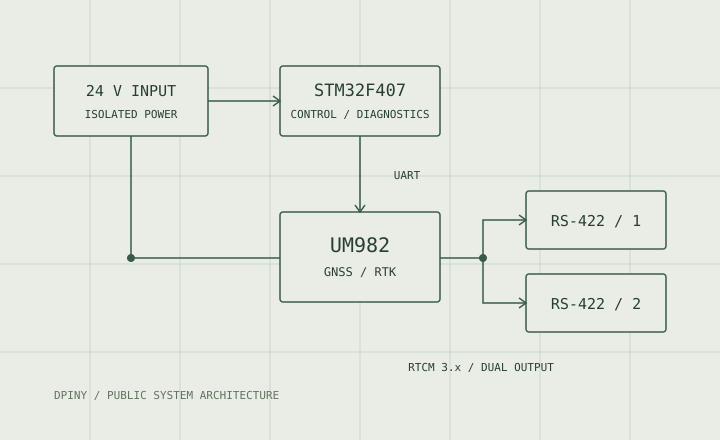

数据与维护接口分离
RS-422 承载 RTCM 输出，USB CDC 提供配置与诊断通道。两类接口分别承担数据传输和设备维护，便于定位通信与设备状态问题。
项目 / 01
dpiny
基于 STM32F407 与 UM982 的 RTK 基站，覆盖供电、通信接口、模块配置和设备诊断。项目包括硬件架构、固件实现及配套调试工具。
STM32F407 · UM982 · FreeRTOS · RS-422

01 / 项目背景
UM982 提供定位及 RTCM 数据。设备侧完成供电与接口适配，并提供模块配置、状态查询和复位管理。STM32 承担控制与维护功能，通过独立接口提供调试支持。
02 / 实现要点
RS-422 承载 RTCM 输出，USB CDC 提供配置与诊断通道。两类接口分别承担数据传输和设备维护，便于定位通信与设备状态问题。
以消息类型和 CRC 检查 RTCM 数据流；对 GPIO、外设状态及复位问题，结合 SWD 寄存器读取与串口日志分析故障。
将构建、烧录、测试和记录步骤整理为 Liakia 工作流，并单独保留 USB CDC 复位恢复问题的分析、修改与回归记录。
03 / 公开资料
04 / 范围与限制
台架记录反映特定硬件、固件及测试条件下的设备行为，不替代 GNSS 精度、EMC、环境可靠性或具体应用的验收。